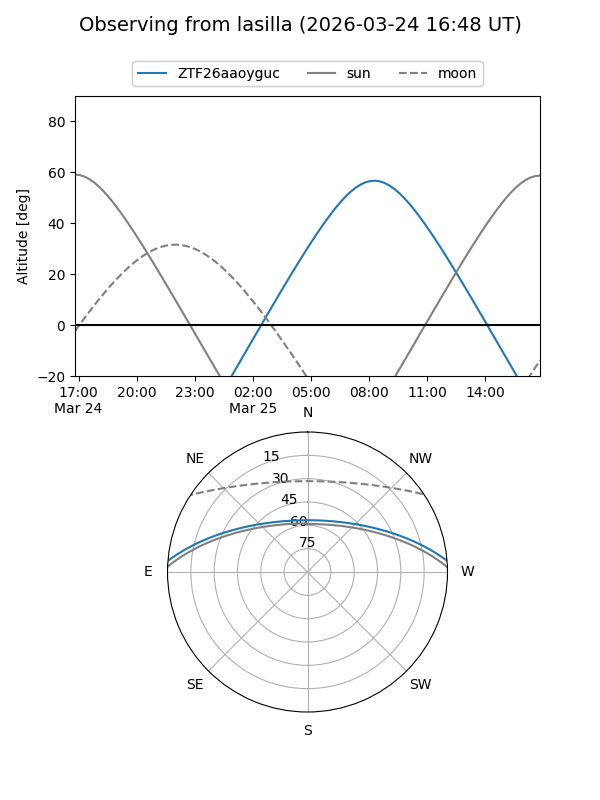
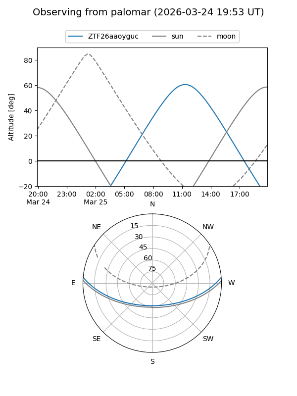

ZTF26aaoyguc
Target ZTF26aaoyguc at 2026-03-25 13:04
Aliases and brokers:
FINK: link
Lasair: link
ALeRCE: link
alt names
ZTF26aaoyguc (ztf,fink_ztf)
Coordinates:
equatorial (ra, dec) = 235.6271,+4.11043
equatorial (HMS+DMS) = 15:42:30.51,+04:06:37.54
galactic (l, b) = (11.1905,+43.18498)
Flags:
Photometry:
last ztfg=18.85, ztfr=18.32
1 ztfg, 1 ztfr detections
Lightcurve
Visibility


Additional plots